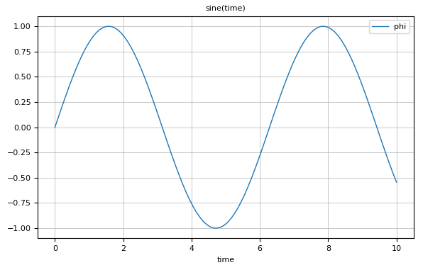
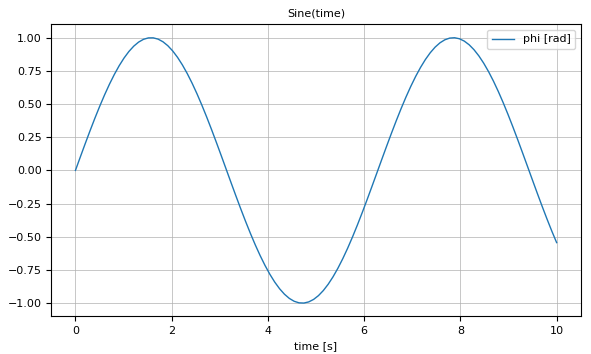
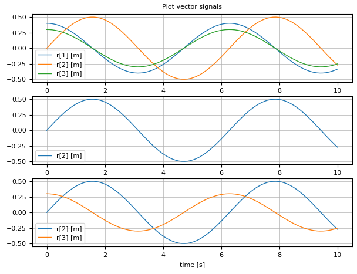
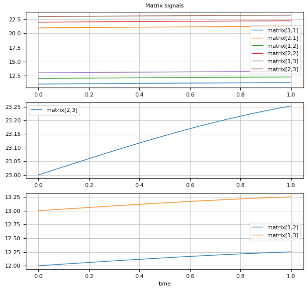
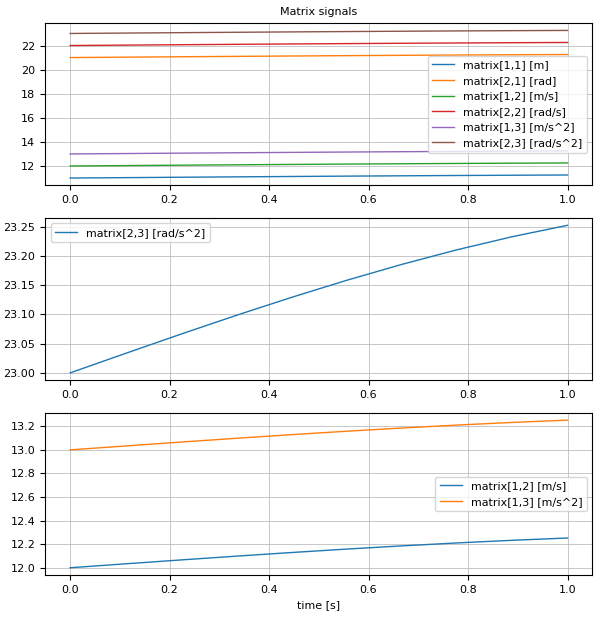
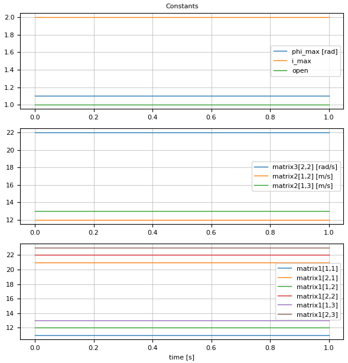
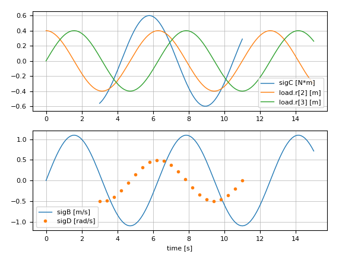
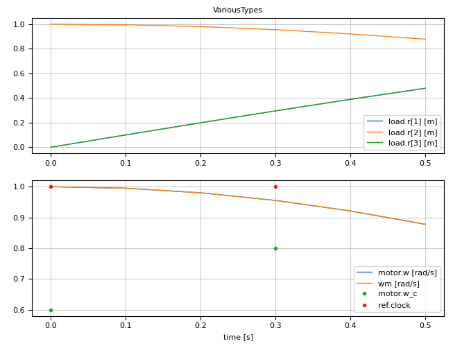

Plot Examples
OneScalarSignal
using SignalTables
@usingPlotPackage
t = range(0.0, stop=10.0, length=100)
sigTable = SignalTable(
"time" => Var(values = t, independent=true),
"phi" => Var(values = sin.(t))
)
showInfo(sigTable)
plot(sigTable, "phi", heading="sine(time)")results in:
name unit size eltypeOrType kind attributes
──────────────────────────────────────────────────────────
time (100,) Float64 Var independent=true
phi (100,) Float64 Var
OneScalarSignalWithUnit
using SignalTables
@usingPlotPackage
t = range(0.0, stop=10.0, length=100)
sigTable = SignalTable(
"time" => Var(values = t, unit="s", independent=true),
"phi" => Var(values = sin.(t), unit="rad")
)
showInfo(sigTable)
plot(sigTable, "phi", heading="sine(time)")results in:
name unit size eltypeOrType kind attributes
───────────────────────────────────────────────────────────
time "s" (100,) Float64 Var independent=true
phi "rad" (100,) Float64 Var
OneVectorSignalWithUnit
using SignalTables
@usingPlotPackage
t = range(0.0, stop=10.0, length=100)
sigTable = SignalTable(
"time" => Var(values = t, unit="s", independent=true),
"r" => Var(values = [0.4*cos.(t) 0.5*sin.(t) 0.3*cos.(t)], unit="m"),
)
showInfo(sigTable)
plot(sigTable, "phi", heading="sine(time)")results in:
name unit size eltypeOrType kind attributes
───────────────────────────────────────────────────────────
time "s" (100,) Float64 Var independent=true
r "m" (100,3) Float64 Var
OneMatrixSignal
using SignalTables
@usingPlotPackage
t = range(0.0, stop=1.0, length=10)
offset = Float64[11 12 13;
21 22 23]
matrix = Array{Float64,3}(undef,length(t),2,3)
for i = 1:length(t), j = 1:2, k=1:3
matrix[i,j,k] = offset[j,k] + 0.3*sin(t[i])
end
sigTable = SignalTable(
"time" => Var(values = t, independent=true),
"matrix" => Var(values = matrix)
)
showInfo(sigTable)
plot(sigTable, "phi", heading="sine(time)")results in:
name unit size eltypeOrType kind attributes
──────────────────────────────────────────────────────────────
time (10,) Float64 Var independent=true
matrix (10,2,3) Float64 Var
OneMatrixSignalWithMatrixUnits
using SignalTables
@usingPlotPackage
t = range(0.0, stop=1.0, length=10)
offset = Float64[11 12 13;
21 22 23]
matrix = Array{Float64,3}(undef,length(t),2,3)
for i = 1:length(t), j = 1:2, k=1:3
matrix[i,j,k] = offset[j,k] + 0.3*sin(t[i])
end
sigTable = SignalTable(
"time" => Var(values = t, unit="s", independent=true),
"matrix" => Var(values = matrix, unit=["m" "m/s" "m/s^2";
"rad" "rad/s" "rad/s^2"])
)
showInfo(sigTable)
plot(sigTable, "phi", heading="sine(time)")results in:
name unit size eltypeOrType kind attributes
──────────────────────────────────────────────────────────────────────────────────────────────────────
time "s" (10,) Float64 Var independent=true
matrix ["m" "m/s" "m/s^2"; "rad" "rad/s" "rad/s^2"] (10,2,3) Float64 Var
ConstantSignals
using SignalTables
@usingPlotPackage
t = range(0.0, stop=1.0, length=5)
matrix = Float64[11 12 13;
21 22 23]
sigTable = SignalTable(
"time" => Var(values = t, unit="s", independent=true),
"phi_max" => Par(value = 1.1f0, unit="rad"),
"i_max" => Par(value = 2),
"open" => Par(value = true),
"file" => Par(value = "filename.txt"),
"matrix1" => Par(value = matrix),
"matrix2" => Par(alias = "matrix1", unit="m/s"),
"matrix3" => Par(alias = "matrix1", unit=["m" "m/s" "m/s^2";
"rad" "rad/s" "rad/s^2"])
)
showInfo(sigTable)
plot(sigTable, "phi", heading="sine(time)")results in:
name unit size eltypeOrType kind attributes
────────────────────────────────────────────────────────────────────────────────────────────────────
time "s" (5,) Float64 Var independent=true
phi_max "rad" () Float32 Par
i_max () Int64 Par
open () Bool Par
file String Par
matrix1 (2,3) Float64 Par
matrix2 "m/s" (2,3) Float64 Par alias="matrix1"
matrix3 ["m" "m/s" "m/s^2"; "rad" "rad/s" "rad/s^2"] (2,3) Float64 Par alias="matrix1"
MissingValues
using SignalTables
@usingPlotPackage
time1 = 0.0 : 0.1 : 3.0
time2 = 3.0 : 0.1 : 11.0
time3 = 11.0 : 0.1 : 15
t = vcat(time1,time2,time3)
sigC = vcat(fill(missing,length(time1)), 0.6*cos.(time2.+0.5), fill(missing,length(time3)))
function sigD(t, time1, time2)
sig = Vector{Union{Missing,Float64}}(undef, length(t))
j = 1
for i = length(time1)+1:length(time1)+length(time2)
if j == 1
sig[i] = 0.5*cos(t[i])
end
j = j > 3 ? 1 : j+1
end
return sig
end
sigTable = SignalTable(
"time" => Var(values=t, unit="s", independent=true),
"load.r" => Var(values=0.4*[sin.(t) cos.(t) sin.(t)], unit="m"),
"sigA" => Var(values=0.5*sin.(t), unit="m"),
"sigB" => Var(values=1.1*sin.(t), unit="m/s"),
"sigC" => Var(values=sigC, unit="N*m"),
"sigD" => Var(values=sigD(t, time1, time2), unit="rad/s", variability="clocked", info="Motor angular velocity")
)
showInfo(sigTable)
plot(sigTable, [("sigC", "load.r[2:3]"), ("sigB", "sigD")])results in:
name unit size eltypeOrType kind attributes
─────────────────────────────────────────────────────────────────────────────────────────────────────────────
time "s" (153,) Float64 Var independent=true
load.r "m" (153,3) Float64 Var
sigA "m" (153,) Float64 Var
sigB "m/s" (153,) Float64 Var
sigC "N*m" (153,) Union{Missing,Float64} Var
sigD "rad/s" (153,) Union{Missing,Float64} Var variability="clocked", info="Motor angular velocit…
VariousTypes
using SignalTables
@usingPlotPackage
t = 0.0:0.1:0.5
sigTable = SignalTable(
"time" => Var(values= t, unit="s", independent=true),
"load.r" => Var(values= [sin.(t) cos.(t) sin.(t)], unit="m"),
"motor.angle" => Var(values= sin.(t), unit="rad", state=true),
"motor.w" => Var(values= cos.(t), unit="rad/s", integral="motor.angle"),
"motor.w_ref" => Var(values= 0.9*[sin.(t) cos.(t)], unit = ["rad", "1/s"],
info="Reference angle and speed"),
"wm" => Var(alias = "motor.w"),
"ref.clock" => Var(values= [true, missing, missing, true, missing, missing],
variability="clock"),
"motor.w_c" => Var(values= [0.6, missing, missing, 0.8, missing, missing],
variability="clocked", clock="ref.clock"),
"motor.inertia" => Par(value = 0.02f0, unit="kg*m/s^2"),
"motor.data" => Par(value = "resources/motorMap.json"),
"attributes" => Par(info = "This is a test signal table")
)
showInfo(sigTable)
plot(sigTable, ["load.r", ("motor.w", "wm", "motor.w_c", "ref.clock")], heading="VariousTypes")results in:
name unit size eltypeOrType kind attributes
──────────────────────────────────────────────────────────────────────────────────────────────────────────────
time "s" (6,) Float64 Var independent=true
load.r "m" (6,3) Float64 Var
motor.angle "rad" (6,) Float64 Var state=true, der="motor.w"
motor.w "rad/s" (6,) Float64 Var
motor.w_ref ["rad", "1/s"] (6,2) Float64 Var info="Reference angle and speed"
wm "rad/s" (6,) Float64 Var alias="motor.w"
ref.clock (6,) Union{Missing,Bool} Var variability="clock"
motor.w_c (6,) Union{Missing,Float64} Var variability="clocked", clock="ref.clock"
motor.inertia "kg*m/s^2" () Float32 Par
motor.data String Par
attributes Par info="This is a test signal table"